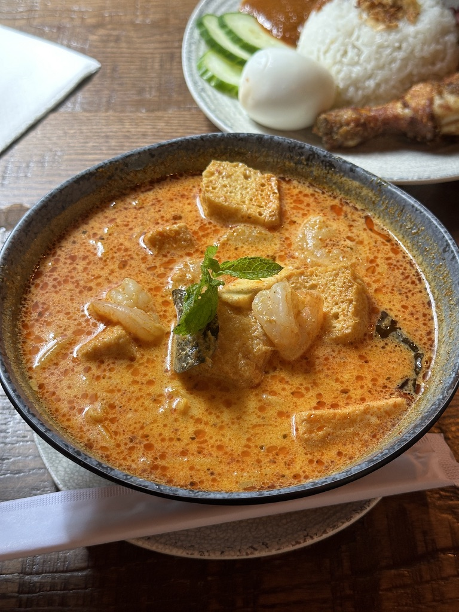

The Craving
Long flights make you hungry in a weird way that isn't quite exhaustion or jet lag, but rather a hollow need for something hot and savory. By the time I landed in London, that need had been building for hours, and I didn't want a sandwich or anything light, I just wanted soup.
London is supposed to be one of the best international food cities in the world, and I heard that enough times to believe it. My first test was simple: find me a bowl of laksa.
The Descent
It’s hard to find Roti King because you walk past a small sign on Doric Way near Euston, find a staircase, and go down. The basement dining room is loud before you even get to the bottom of the stairs with voices, clanging bowls, and the hiss of a kitchen that doesn't stop. We came during lunch hour and it was packed with every chair taken, feeling like a good hawker stall filled with half tourists who did their research and half locals who know it's the best option around.
There is no breathing room down there, and I was touching elbows with the table next to me before I even picked up the menu. The group behind us was close enough that I could feel their conversation, so there were no frills, no acoustics, and no space, just people eating.
"The basement dining room is loud before you're even at the bottom of the stairs."
The Kari Laksa
I ordered the Kari Laksa and my friend ordered the Nasi Lemak. The laksa came out first, and the smell of sharp, citrusy, and clean lemongrass hit me before the bowl even hit the table, cutting right through all the noise in the room. Then I saw the deep orange-gold broth, which is the kind of color that tells you there's plenty of coconut milk in there.
That first spoon was perfect, as the coconut base was creamy but not heavy, and the lemongrass smell hit me as the steam came up, clearing my sinuses instantly. Under the richness there was sweetness that comes from fresh seafood cooking in the broth, making the soup taste like it had been cooking for a long time without tasting tired.
The noodles were thick and chewy, holding their texture perfectly even in the hot broth. The shrimp had that snap where you bite down and there's resistance before it gives, which is that same satisfying pop you get from a good sausage. It's a small thing, but when shrimp is cooked right it's one of the best textures in food, because when it's overcooked it's just ruined.
"The coconut base was creamy without being heavy, and the lemongrass fragrance bloomed as the steam came up."
The Nasi Lemak
I kept looking at my friend's plate because the Nasi Lemak came with a piece of deep golden fried chicken that looked incredibly crispy. The coating looked so craggy and dry that it barely looked like it touched oil, and I actually heard it before I tasted it. Even with all the noise in that room from the chatter, the bowls, and the kitchen, I could still hear the crunch when my friend cut into it, which is a level of crispy that isn't accidental.
It genuinely made me drool, and I'm not exaggerating when I say that in a basement full of strangers, I was staring at someone else's plate and I'm not proud of it.
No Frills, No Doubt
Roti King isn't trying to be anything else because there is no design concept, no mood lighting, and no tasting notes. The tables are packed too close together in a room that is too loud inside a basement, but none of that matters because that might be the entire point.
Sitting there with a bowl of laksa and looking at the best fried chicken I'd seen all trip, I remembered that the best food is usually the least fussy. This felt like what you'd actually eat in Southeast Asia, not because it was trying to be exotic, but because it was honest from someone who made it the right way and didn't overthink it.
London really delivered, the flight hunger was completely gone, and I'd gladly go back tomorrow.
Roti King
📍 40 Doric Way, London, NW1 1LH
🕐 Lunch & Dinner · No reservations · First come, first served
💰 Budget-friendly